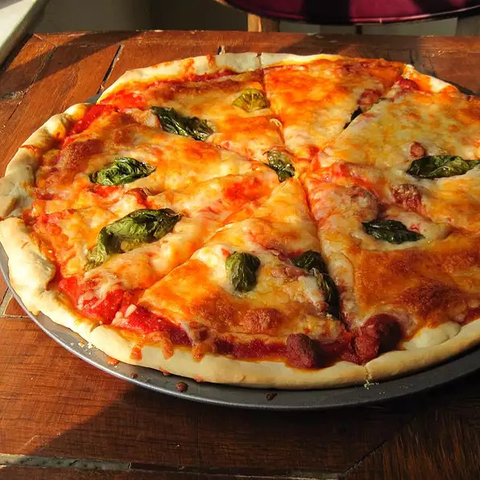

Authentic Pizza Margherita

Description
Inspired by the pizza at Bar Del Corso,
this Pizza Margherita features
tomato sauce,
mozzarella, and basil, with just a hint of sea salt.
Note: Recipe yields 4 servings.
Ingredients
3½ cups all-purpose flour
1 teaspoon salt
1 cup water
1 (.25 ounce) package active dry yeast
1 pinch white sugar
¼ cup flour for dusting
2 cups pizza sauce
20 slices fresh mozzarella cheese
20 leaves fresh basil
Olive oil
Sea salt to taste
Steps
Stir flour and 1 teaspoon salt in a bowl. Set aside.
Mix water, yeast, and sugar in a large bowl.
Let stand until yeast begins to form a creamy foam,
about 5 minutes.
Stir half the flour mixture into yeast mixture until no dry spots remain.
Stir in remaining flour, 1/2 cup at a time, mixing well after each addition.
When dough pulls together, turn it out onto a lightly
floured surface and kneadd
until smooth and elastic, about 8 minutes.
Lightly oil a large bowl, then place dough in the bowl and turn to coat with oil. Cover with a light
cloth and let rise in a warm place (80 to 95 degrees F (27 to 35 degrees C)) until doubled in volume,
about 1 hour. Punch dough down, divide into 4 equal pieces, and form each into a ball.
Preheat oven with a pizza stone to 500 degrees F (260 degrees C).
Stretch out and pat 1 dough ball to form a circle 10 to 12 inches in diameter. Place dough on a
lightly floured pizza peel. Top with 1/2 cup of tomato sauce and spread to cover within an inch of
the edge of the dough. Arrange 5 slices of mozzarella cheese on top of the tomato sauce, then place 5
basil leaves on top. Drizzle pizza with 1 tablespoon olive oil and sprinkle with sea
salt to taste. Repeat for 3 remaining dough balls.
Slide each pizza onto the pizza stone in the preheated oven.
Bake until cheese is bubbly and the underside of the crust is golden
brown, 5 to 7 minutes.